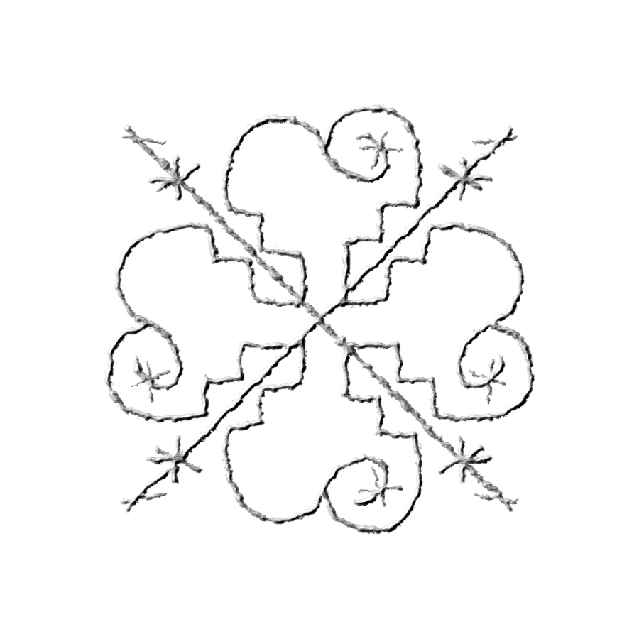
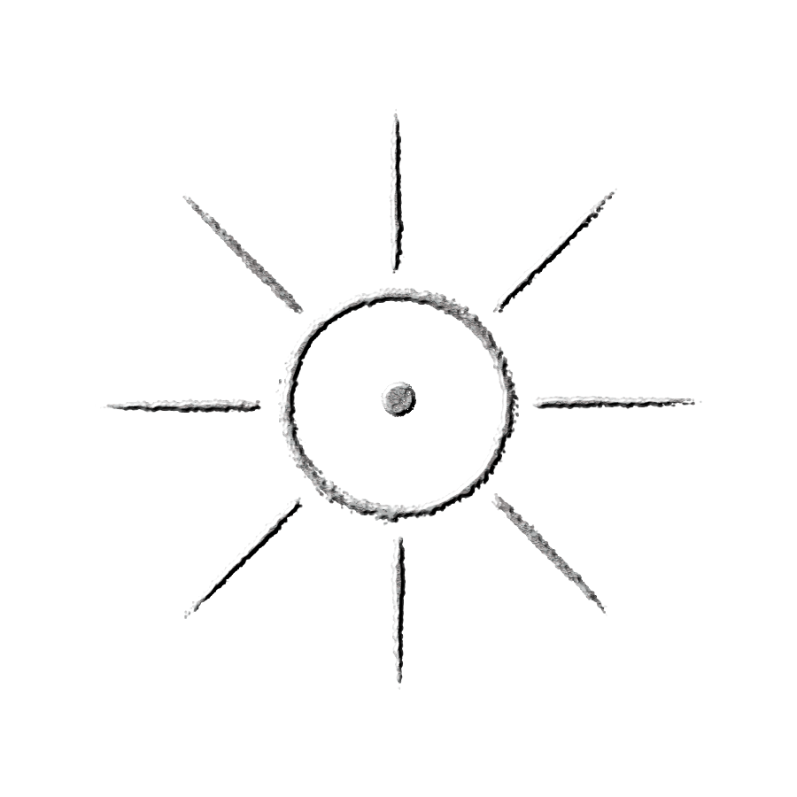
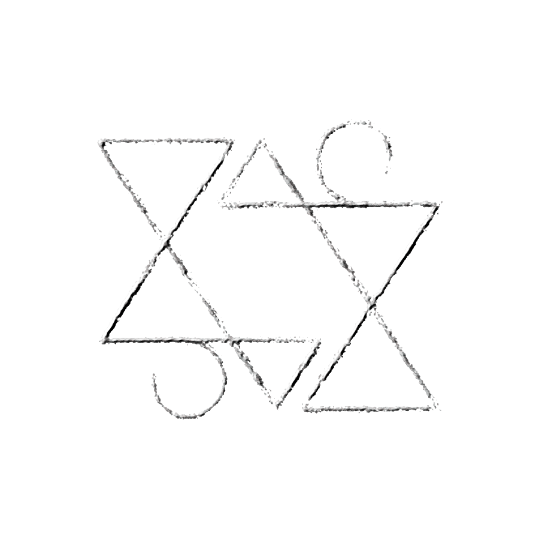
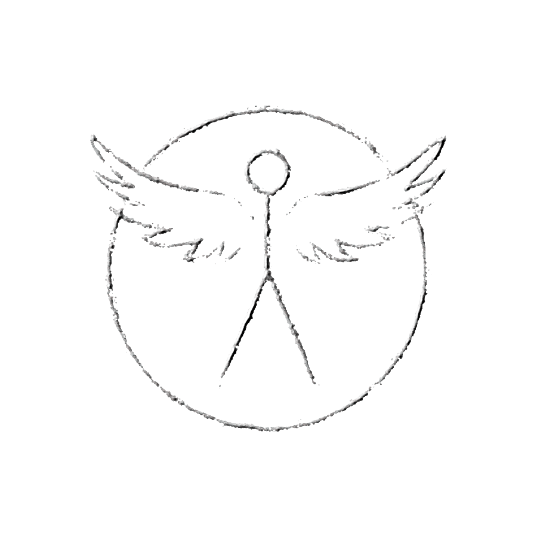

[ TRANSMISIÓN ENTRANTE... ]




"El Trebol Oraculo puede saber las pruebas de los otros coros, y, decir al privado a que equipo se le otorgara la respuesta de su respectiva prueba inmediatamente."
INGRESE LA SECUENCIA DE CIFRADO AUTORIZADA: